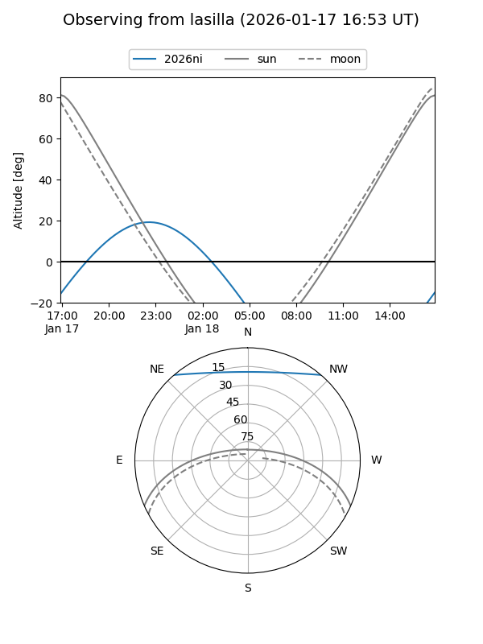
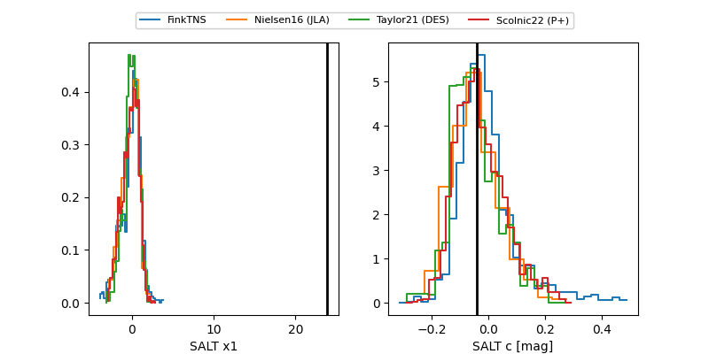

2026ni
Target 2026ni at 2026-01-24 04:51
Aliases and brokers:
FINK: link
Lasair: link
ALeRCE: link
TNS: link
YSE: link
alt names
ZTF26aaaails (ztf,fink_ztf)
2026ni (tns,yse)
ATLAS26afb (atlas)
Coordinates:
equatorial (ra, dec) = 24.7432,+41.31330
equatorial (HMS+DMS) = 01:38:58.37,+41:18:47.89
galactic (l, b) = (132.4480,-20.67844)
Flags:
confirmed ia
Photometry:
last atlasc=18.83, atlaso=19.36, ztfg=19.13, ztfr=19.09
1 atlasc, 2 atlaso, 7 ztfg, 9 ztfr detections
Lightcurve

Visibility


Additional plots
